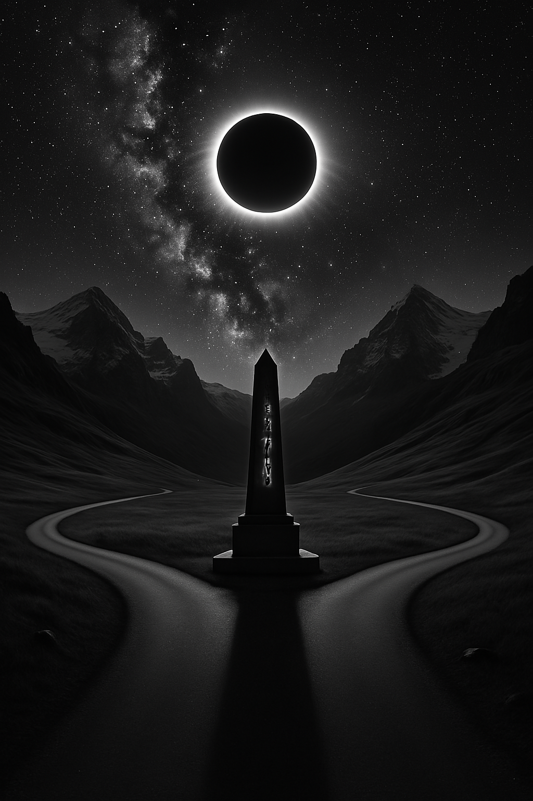
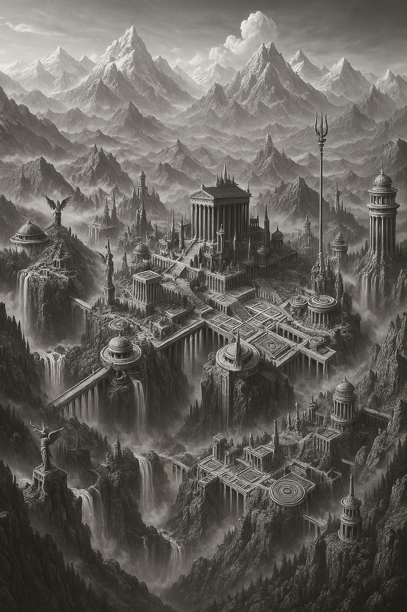
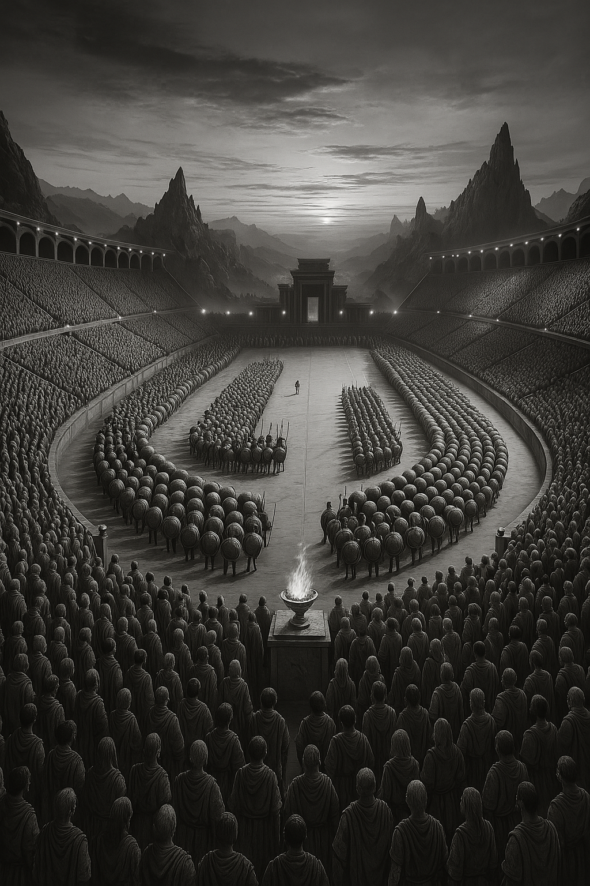
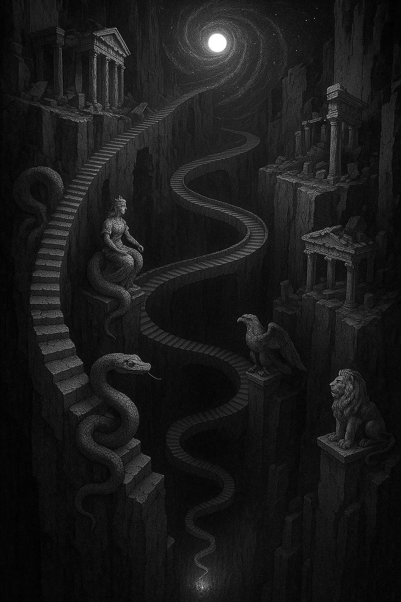

The Forked Path
A choice not between good and evil—but between madness and memory. The road splits. The mind follows.
Olympia Remembered
Before the Games became sacrifice, there was a city of knowledge, glory, and broken gods. This is its echo.
The Arena of Thought
Combat here is sacred—each strike, a symbol. Each loss, a forgetting. Blood writes the laws of this world.
Apokolasi
Descent is not punishment—it is initiation. Through serpents and silence, one reaches the final transmission.
